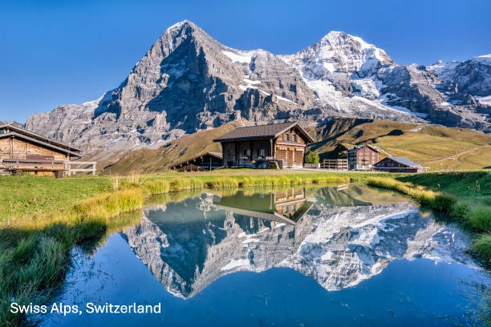
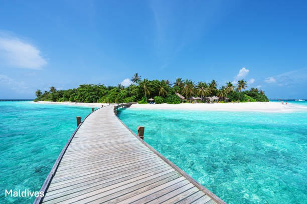

Book Flights to Amazing Places


Start Exploring
Explore More with GlobeTrekker
Discover breathtaking destinations, experience diverse cultures, and create unforgettable memories around the world. From snow-capped mountains and tropical islands to historic cities and natural wonders, GlobeTrekker helps you find incredible places to visit. Whether you're planning a relaxing getaway or an exciting adventure, our travel guides and inspiration can help you explore with confidence and make every journey memorable